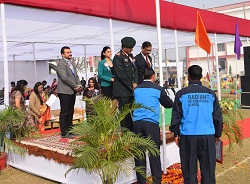

Award Ceremony seniors K.N.PUBLIC School annual award ceremony was held on 29th April 2017 at their school campus. The Annual Awards Ceremony takes place at the end of every Academic year to celebrate all our students’ activities and achievements throughout the year. Students are awarded for their co-and extracurricular as well as their academic achievements. The gala ceremony was attended by 500 people which comprised of parents the patron of the school Mrs Meena Singh Ex M.P Arah and the chairman of the school Mr. Vishal Singh along with other dignitaries.
Annual Sports Day on 4th February 2017 K.N.PUBLIC School proudly hosted Annual Sports Day on 4th February 2017. This celebrated event was attended by a distinguished gathering of parents & eminent people of the city. The event was also attended by more than 3000 students of the school. The event was presided by the Chief Guest Brig. N. Raj Kumar, SM, VSM, Centre Commandant, Bihar Regiment Centre, Danapur. Renowned for his selfless service and devotion, Brig. N. Raj Kumar was awarded Sena Medal and Vishist Seva Medal. This memorable event was also graced as the Guest of Honour by Ms Pranati Rai Prakash , one of the budding fashion model of this country and the winner of India’s Next Top Model Guest Season Two.

K.N. PUBLIC School has always aspired to be an international school. The school management took a mammoth step in this direction by hosting the East India Round of World Scholars Cup at its premises on October 18th and 19th Oct. World Scholars Cup is an international team academic tournament with students participating from over 40 countries. The competition was founded by Daniel Berdichevsky. The tournament attracts global community of future scholars and leaders. The event was attended by 350 students from various part of East India. The World Scholars Cup gave an opportunity to numerous students from East India to participate in an international event of such high standard. The theme for this year was An Imperfect World.

JOURNEY TO DREAMLAND K.N.PUBLIC School proudly celebrated its Annual Function on 26th November 2016 in the school campus. The event was attended by 2000 people and 400 students of Montessori along with students of class I and II, participated in the mega show along with a number of prominent people. The function was presided by the Chief Guest Shri Vijay Prakash, Minister, Labour Resource Department, Government of Bihar. A number of dignitaries along with patron of the school Mrs. Meena Singh, Chairman Mr. Vishal Singh Director Madam Rita Singh along with the Principal Colonel Prem Prakash and Vice Principal activities and international program Mrs. Sujata Bhadani and Vice Principal academics Mrs. Manisha Sinha. The Annual Function meticulously planned by the students and staff of the school showcased the talent of the students. The theme of the programme was journey to dream land, which was a superb blend of imagination and creativity.